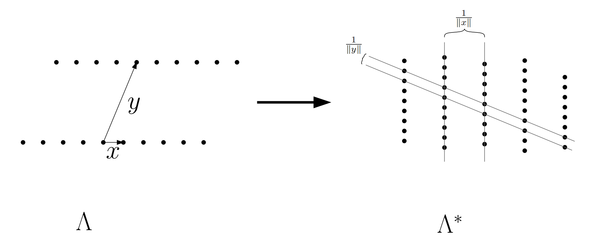

对偶格
参考资料：Regev讲义、Albrecht17
基础定义
对偶格：
对于一个满秩格$\Lambda$，其对偶格为
更一般的，可以定义为：
格$\Lambda$的对偶格中的所有点就是和任意格$\Lambda$中格点内积为整数的点。
在几何中一个简单的例子如下：对于任意一个向量点$x$，与该向量点乘积为整数的点为:点乘为0的超平面，点乘为1的超平面,…。超平面之间的距离为$1/||x||$

对偶基：
对于一个基$B=(b_1,\cdots,b_n) \in \mathbb{R}^{m\times n}$，对偶基$D=(d_1,\cdots,d_n) \in \mathbb{R}^{m\times n}$为唯一的基满足：
- $\text{span}(D)=\text{span}(B)$
- $B^TD=I$
性质
- $(\mathcal{L}(B))^* = \mathcal{L}(D)=\mathcal{L}((B^{-1})^T)$，
- 对任意格$\Lambda$，$(\Lambda^)^=\Lambda$
- 对任意格$\Lambda$，$\text{det}(\Lambda^*)=1/\text{det}(\Lambda)$
- 对任意秩为n的格$\Lambda$，$1 \le \lambda_1(\Lambda)\cdot \lambda_1(\Lambda^*) \le n $